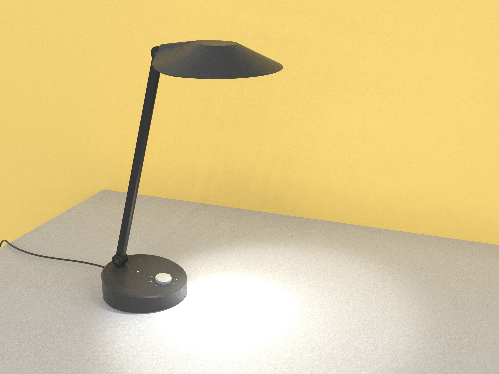

Rhyo
2017
A tasklight timer that encourages the habit of taking breaks from digital screens.
BACKGROUND
The world we live in now revolve around digital tools and portable devices whether it’s for work or personal uses. As people of all ages are spending more hours on digital screens, it’s also crucial to take breaks as prolonged staring can seriously harm one’s vision and well-being. A paper published by the American Macular Degeneration Foundation (AMDF) reports that the blue light accelerate age-related macular degeneration (AMD) and constant exposure to blue light can damage retina cells and once damaged, retina cells do not regenerate. It is an issue that many do not realize exists. Current technique to reduce digital eye strains are often unpractical, distracting and inefficient.
PROJECT
Rhyo uses different temperature and brightness to notify and schedule brief periods of intermission within a workflow. The intention is to encourage a healthy habit of balancing between work and rest, reducing symptoms of digital eye strain as much as possible. Rhyo also fits into shared work spaces where people can temporarily take ownership of the light via bluetooth connection.
“The brain and body are not machines.
They are organism with a natural rhythm of activity and rest cycles.”
–Steelcase 360 Magazine/ issue70/ Think Better
Redefining ‘in between’ spaces
where people temporarily take ownership of the space, form relationships and interact with the changing environment.
EVIDENCE
Light is made up of electromagnetic particles that travel in waves, the shorter the wavelength; the higher the energy. Specifically, blue light, which emits from any digital screen, has a very short wavelength, and therefore produces a higher amount of energy.
Research shows that 43% of adult’s work required prolong use of digital devices and that 70% of adults who report regular use of digital device experienced what is called the symptoms of Digital eye strain: dry eyes, difficulty in focusing, headaches, blurred vision and back pain.
Constant exposure to blue light can damage retina cells once damaged, retina cells do not regenerate.
–American Macular Degeneration Foundation (AMDF)
Numerous studies have shown that by simply taking brief diversions from a task, not only lowers symptoms of digital eye strain, but dramatically increase productivity and improve one’s ability to focus on the task at hand.
Light is one of the most natural ways we experience the passage of time as our body’s physical, mental and behavioral changes respond primarily to the light and darkness of our environment.